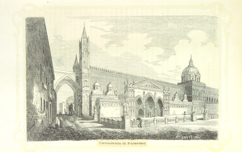

Archivio per la categoria ‘Dati’
3 settembre, 2014 | di Andrea Borruso
Sei anni fa scrissi un post, prima di partire per una settimana di piacere a Linosa; stavolta questo paradiso terrestre mi ha ispirato un post di ritorno.
Lo spunto di partenza di oggi è lo stesso di allora: creare per il mio smartphone una copia della cartografia digitale dell’isola, in modo che sia disponibile anche offline, visto che in loco la connettività è scarsa.
Sono passati sei anni, un’enormità dal punto di vista tecnologico, e le modalità per farlo sono adesso davvero tante. Anche per questa ragione non parlerò di soluzioni, ma darò spazio a quello che è un vero e proprio scoop giornalistico: l’isola di Linosa deve essere spostata!
Scopro questa cosa incredibile il 18 agosto, data del mio arrivo sul posto. Nelle prime ore noleggio uno scooter, sistemo i bagagli in casa e subito voglio fare il punto mappa. Perché l’alloggio è in una zona per me nuova, perché voglio scegliere dove fare il primo bagno, perché mi voglio fare un’idea della viabilità, ecc.
Accendo il ricevitore GPS del mio smartphone, aspetto che venga calcolata la mia posizione, faccio partire la mia app e mi rendo subito conto di essere stato spostato a est di diverse decine di metri. Perché “carta canta”, non ci sono dubbi, e se il mio smartphone mi fa vedere il pallino in una certa posizione, sarà il mio maledetto telefonino “roottato” che funziona male. Ho pensato anche che il problema fosse della mia cartografia, ma avevo generato di proposito due basi offline, da due fonti diverse (Bing Maps di Microsoft e OpenStreetMap, e su entrambe riscontravo lo stesso problema.
Riavvio il telefonino, salgo sulla moto per fare un primo giro, arrivo sul lungo mare, rifaccio il test precedente e non cambia nulla.

Preso dalla sconforto decido di fare una passeggiata e registrare un tracciato GPS, in modo che di ritorno a Palermo possa fare con calma un po’ di verifiche e capire che strani dati produce il mio cellulare (si usa più questa parola?). A registrazione terminata, voglio essere sicuro che tutto sia stato archiviato correttamente, apro la mia app di tracking in una zona coperta da connessione web e scopro che tutto sembra tornare a funzionare. Ma c’è una differenza, la mappa di base stavolta è quella del Geoportale della Regione Siciliana: che siano le altre basi il problema?
Ho potuto verificare la cosa, alcuni giorni fa, al ritorno da Linosa. Avevo infatti bisogno di una connessione e di un personal computer.
Ho creato una vista cartografica (leaflet.js + Plugins by Pavel Shramov + Leaflet.Sync) in cui mettere a confronto i tre layer cartografici citati, sui quali ho sovrapposto la registrazione del mio percorso GPS, che ho usato un po’ come cartina al tornasole.

Come si vede dallo screenshot di sopra, la traccia GPS (in blu) è correttamente posizionata sul base della Regione Siciliana, mentre è spostata di diverse decine di metri a est su Bing Maps. E lo stesso (vedi sotto) vale per OpenStreetMap.

Non poteva essere diversamente perché i dati OpenStreetMap derivano (almeno per la gran parte) probabilmente da un tracciamento sulla base Bing. La Microsoft infatti ha concesso da tempo il ricalco sul proprio layer satellitare per l’arricchimento del database OSM, ma qui purtroppo è entrato in gioco la propagazione dell’errore: la base Bing è (qui a Linosa) “registrata” male, e qualsiasi prodotto derivato erediterà questo problema.
La vista cartografica dinamica interattiva con cui potrete testare la cosa in autonomia è accessibile qui: http://tanto.github.io/spostalinosa/
Ho inserito anche un pinpoint fisso a centro mappa, in modo da fare anche confronti a occhio tra un elemento individuato sulle due tavole.
Non ho idea di come sia possibile che i dati della multinazionale contengano questo errore, ma di certo “c’è da spostare Linosa”. A chi mi posso rivolgere per segnalare la cosa?
I dati OpenStreetMap saranno corretti in pochissimo tempo, per quelli di Bing temo ci vorrà più tempo: che grande cosa che è la “mappa liberamente modificabile dell’intero pianeta“!
Ho fatto leggere il post in bozza a questa redazione e a qualche altro amico. Sono usciti molti spunti “vicini” al bel post di Sergio, di cui un po’ questo è un figlio casuale, e anche uno dei mille “casi d’uso”.
Voglio concludere proprio con tre elementi che ho raccolto:
- la mappa non è il territorio (me l’ha detto tempo fa Franco Farinelli e me l’ha ripetuto in questi giorni napo);
- la cartografia della PA italiana è spesso di alto livello, è una grande risorsa e bisogna liberarla. Alla mia regione chiedo di lavorare sul passaggio ad una licenza che consenta pienamente il riuso dei dati, dalla attuale CC BY-SA 3.0 IT a una CC BY 4.0;
- in ultimo l’invito a non credere acriticamente né ai nostri strumenti, né ai dati a cui accediamo tramite questi, ad alzare la testa dallo smartphone e camminare un po’ più con lo sguardo aperto e rivolto in tutte le direzioni (lo so, lo so, si vede che è un’autocritica
 ).
).
NdR: questo di Linosa non è un caso unico e isolato. Sembra che anche Matera sia da spostare.
Posted in Dati | 2 Comments »
28 luglio, 2014 | di Stefano Sabatini
L’Osservatorio Carburanti, introdotto con una legge del 2009 (art. 51, legge 99/2009), vuole essere uno strumento di trasparenza e garanzia della concorrenza tutelato e gestito dal Ministero dello Sviluppo Economico. Dal 2013 é obbligatorio per tutti i distributori sul territorio italiano comunicare e tenere aggiornati i prezzi praticati sul portale ministeriale (https://carburanti.mise.gov.it/OssPrezziSearch/): il decreto ministeriale del 15 Ottobre 2010 prescrive l’obbligo di comunicare il prezzo iniziale, il ritocco dei prezzi al rialzo e comunque un aggiornamento ogni 8 giorni dall’ultima comunicazione, e suggerisce una serie di dati da trasmettere su base volontaria. Le sanzioni previste dalla legge, convertite in euro, variano tra 516 e 3098 euro.
La comunicazione al Ministero avviene in tre modi:
- tramite portale web
- tramite sistemi convenzionati (gestiti dai concessionari autostradali o da imprese accreditate)
- tramite gestionali conformi alle specifiche ministeriali
Lato consumatore si dovrebbero aprire enormi possibilità per il monitoraggio dell’andamento dei prezzi e quindi del rispetto della concorrenza, poiché diventa sufficiente avere accesso alla rete per poter avere informazioni puntuali sui prezzi praticati dalle stazioni di rifornimento. Il mercato è attualmente composto dal portale ministeriale e dalle applicazioni create dalle imprese accreditate: il ministero tramite Infocamere contribuisce con OsservaPrezzi, una sorta di applicazione demo che mostra il potenziale di questo dataset (2.6 valutazione media sul Play Store), mentre tra le varie proposte permane ancora la storica PrezziBenzina (4.4 valutazione media sul Play Store).
La domanda che ci siamo posti quando abbiamo iniziato l’analisi del portale è la seguente: se il database dei prezzi è nato a garanzia di trasparenza e concorrenza, perché la piattaforma non prevede ancora il rispetto dei criteri stabiliti ad esempio dall’Agenda Digitale italiana? Possiamo fare qualcosa per contribuire al suo miglioramento?
La prima azione compiuta è stata l’analisi di come funziona dietro le quinte il portale del MiSE: con sommo piacere questo è costruito con tecnologie web al passo coi tempi ed il frontend (il “lato utente”) utilizza il framework Bootstrap. Questo teoricamente potrebbe garantire la navigabilità da piattaforme mobili, ma evidentemente si è lasciato che l’utente trovasse necessario l’utilizzo delle app.
L’API che fa dialogare la parte utente con il server è stata esplorata facilmente, permettendo perfino di documentarla parzialmente: l’unica azione per rendere il servizio disponibile in chiaro alla comunità sarebbe documentare le modalità di interrogazione e fornire l’accesso tramite chiavi agli sviluppatori interessati.
L’azione successiva si è svolta su due fronti: il primo è stato provare a fornire servizi utente facilmente fruibili, mentre il secondo è stato ricavare un dump completo del database in un dato momento per permetterne l’analisi a mo’ di big data.
Se l’API fosse ufficiale sarebbe utile che fornisse anche metodi per utilizzare i dati direttamente via JavaScript (JSONP) ma, purtroppo, ciò non è possibile al momento: si è reso necessario creare un ‘proxy’ fra i nostri esperimenti ed il servizio trasformando le nostre richieste da GET a POST via PHP, superando contemporaneamente le limitazioni di sicurezza che i nostri browser mettono in atto nei confronti delle richieste a domini diversi (cross-domain).
L’endpoint position, ad esempio, permette di ottenere tutti i distributori nell’intorno di un dato punto per un raggio di 10 chilometri: l’applicazione contenuta nella pagina distributori.html permette di consultare su mappa tutti i distributori intorno alla posizione scelta dall’utente (via doppio clic o tramite geolocalizzazione), mentre quella della pagina cheap.html evidenzia il distributore più conveniente nella stessa area.

Il dump ottenuto tramite simulazione delle richieste all’API copre tutti i distributori disponibili e viene trasformato in automatico dalla risposta JSON ad un database costituito di due parti: una tabella raccoglie la descrizione del distributore (marca, posizione, indirizzo,…), mentre l’altra raccoglie i prezzi di ognuno di essi. Le due tabelle sono legate tra loro da un identificatore trovato all’interno della risposta (il quale andrebbe a sua volta standardizzato e reso ufficiale per permettere incroci con altre basi di dati). Questo database è reso disponibile sia come file SQLITE sia come file SPATIALITE: quest’ultimo viene anche purificato dei distributori con coordinate non valide e può essere utilizzato per analisi spaziali con Qgis.
Noi continueremo ad estrarre informazione e valutarla per mostrare cosa può significare la disponibilità aperta dei dati: più persone ci saranno a consultare ed utilizzare i dati dell’Osservatorio, maggiore trasparenza ci sarà nella gestione e nel monitoraggio del mercato dei carburanti. I segnali che provengono ci fanno credere di stare seguendo una strada giusta e con pochi accorgimenti in una fase futura di apertura tutti ne potranno trarre beneficio.
Il repository GitHub è localizzato all’indirizzo https://github.com/sabas/carburantiMiSE; l’istanza corrispondente, dalla quale scaricare anche i dump più recenti, è all’indirizzo http://toolserver.openstreetmap.it/carburantiMiSE/
Posted in Dati | 2 Comments »
3 marzo, 2014 | di Andrea Borruso
50 centimentri sono abbastanza per un post a risoluzione schermo (largo circa 500 px), più o meno la lunghezza del passo di un uomo, il diametro di un canestro di basket, poco più del lato lungo di un foglio A3. Tutto è relativo.
Se si tratta della risoluzione di ortofoto è sicuramente un piccolo grande numero, che consente di osservare il territorio con un buon dettaglio, di supervisionare virtualmente un’area prima di fare un volo con un drone, di derivare delle informazioni vettoriali, di guardare con occhio languido la cala in cui si andava in vacanza da bambini, di verificare la modifica di un versante di frana nel tempo. E tanto, tanto altro di più. Ma le dimensioni non sono tutto.
e-GEOS e il Ministero dell’Ambiente e della Tutela del Territorio e del Mare e l’Agenzia per le Erogazioni in Agricoltura (AGEA) hanno rilasciato da pochi giorni proprio delle ortofoto a 50 cm., accessibili in WMS (WMTS quelle di e-GEOS). Non si tratta di riprese con presa obliqua e sono accessibili in diversi sistemi di coordinate; due elementi “classici” per questo tipo di dataset, di cui trovo importante rimarcare la differenza con i layer cartografici dei grossi provider web. Ma la “tecnica” non è tutto.
Il dataset di e-GEOS, così come annunciato nel corso della Conferenza OpenGeoData “Istruzioni per il RI-uso”, è rilasciato con una licenza aperta; anzi per la precisione con due tipi di licenze (qui e qui). Questo tipo di accesso ai dati, li trasforma subito in ingredienti di base, con cui ognuno potrà realizzare la propria ricetta. E’ una gran bella cosa.
Del dato AGEA non ho invece trovato ((ma sono certo che ci saranno) i termini di utilizzo.
Per puro diletto ho realizzato un “confronto all’americana” tra i due dataset; lo trovate qui. Noterete che il layer AGEA è molto più lento a caricarsi, ma non si tratta di un dato sottoposto a tile caching come quello di e-GEOS.
Sotto la mappa altre informazioni utili sui dati, comprese le “Capabilities” dei rispettivi servizi WMS.

Posted in Dati | 11 Comments »
31 gennaio, 2014 | di Andrea Borruso

Quando lo scorso maggio – con Ciro, Gerlando, Marco, Giulio, Davide e Francesco – ho iniziato il lavoro che ha portato alla redazione de ” le linee guida sugli #OpenData della città di Palermo” avevo tantissimo entusiasmo, un po’ di conoscenza di dominio e pochissima esperienza su obiettivi di questo tipo.
Mi sentivo forte di entusiasmo e di conoscenze: in dipendenza del momento, le usavo ora come spade, ora come scudi. Mi dovevo prendere cura di un lavoro ”mio”, che mi sembrava di valore per la società.
Oggi, alla luce dell’esperienza fatta, mi sembra inutile brandeggiare qualsiasi arnese e quel lavoro è della comunità, non mi appartiene più.
Questa bella evoluzione si deve essenzialmente a un’intuizione: avere compreso il valore che una licenza fornisce all’opera a cui viene applicata.
Ai più sembrerà una concetto scontato, e confesso che anche io avrei pensato allo stesso modo prima di aver vissuto questa vicenda. Soprattutto per le licenze che danno maggiore “libertà”:
La persona che ha associato un’opera con questo atto ha dedicato l’opera al pubblico dominio attraverso la rinuncia a tutti i suoi diritti al lavoro in tutto il mondo dalle leggi sul copyright, inclusi tutti i diritti connessi e vicini, nei limiti consentiti dalla legge (licenza CC0).
Associare una licenza di questo tipo ad un proprio elaborato lo rende evidentemente “indipendente”, a disposizione di chiunque lo voglia utilizzare, nelle maniere più inaspettate e geniali.
Ma anche il semplice fatto che ad un oggetto sia associata una licenza chiaramente definita è parte del valore di cui sopra. Proprio quest’ultima cosa, l’ho imparata lavorando su queste linee guida.
Quando abbiamo iniziato a scriverle siamo partiti dai contenuti, e durante tutto il processo di elaborazione non abbiamo mai pensato ai diritti sul documento. Se non nei termini classici: ma sto trasgredendo qualche norma? Se copio questo testo ci denunciano? C’è una multa da pagare?
Ma il bello di una licenza è ciò che ti abilita a fare, non quello che ti vieta: ho apprezzato questo concetto e l’ho fatto mio recentemente. A fine dicembre infatti Francesco Piero Paolicelli mi scrive un’email e mi chiede di inviargli copia in formato modificabile delle linee guida di Palermo, perché sul web c’era soltanto la meno “comoda” e accessibile copia in formato PDF. Allora, visto che il documento era mio, di Ciro, Gerlando, Marco, Giulio, Davide e Francesco, dovevo prima condividere con tutti loro la scelta e all’unanimità. Scrivo loro un’email e nasce uno scambio da cui – non senza sane incomprensioni evolute in soluzioni – ci rendiamo conto che il documento non era veramente libero e che stava perdendo il valore (quello che sia) che aveva.
Per liberarlo, dargli superpoteri e farlo diventare virale è bastato applicargli una licenza. Le “linee guida sugli #OpenData della città di Palermo” sono state pubblicate quindi in CC BY-SA e tutti sono liberi di:
- Condividere - riprodurre, distribuire, comunicare al pubblico, esporre in pubblico, rappresentare, eseguire e recitare questo materiale con qualsiasi mezzo e formato
- Modificare - remixare, trasformare il materiale e basarti su di esso per le tue opere per qualsiasi fine, anche commerciale.
Ai seguenti termini:
- Attribuzione - Si deve attribuire adeguatamente la paternità sul materiale, fornire un link alla licenza e indicare se sono state effettuate modifiche. E’ possibile realizzare questi termini in qualsiasi maniera ragionevolmente possibile, ma non in modo tale da suggerire che il licenziante avalli te o il modo in cui usi il materiale.
- Stessa Licenza - Se si remixa, trasforma il materiale o ci si basi su di esso, bisogna distribuirne i contributi con la stessa licenza del materiale originario.
E’ bastato questo per renderlo un documento utile, abilitante e virale e sono felice che le linee guida sugli Open Data approvate in queste ore dal Comune di Matera siano basate sull’entusiasmo, sulla conoscenza e sull’esperienza che hanno portato alla pubblicazione del documento della città di Palermo, che trovate qui http://bit.ly/opendatacomune.
La licenza applicata non è la migliore, ma alcuni testi utilizzati per la sua stesura sono pubblicati in CC BY-SA e quindi è stato necessario imporre la stessa licenza.
E’ la prima versione del documento, e difatti gli abbiamo assegnato un numero di release e scelto un nome. Per il nome abbiamo deciso di iniziare dalla lettera “a” e di usare una parola che “localizzi” un po’ il documento (è un’idea di Gerlando). E’ la prima release, e quindi dovremo prendercene cura anche in futuro, migliorarla, snellirla, uniformarla nello stile, ristrutturarla e completarla.
Migliorarla ad esempio proprio in termini di licenza e passare da CC BY-SA a CC BY, in modo che sia ancora più riutilizzabile. Oppure renderla neutra rispetto ai Comuni di Italia, e rimuovere i riferimenti a Palermo.
Il documento è aperto ai commenti, così che si possano costruire le versioni successive in modo partecipato, e raccogliere correzioni, note e integrazioni di chicchessia.
E’ stata ed è una bella esperienza e mi sembra utile condividerla. Il documento pubblicato ora in CC BY-SA non vuole essere però una “terra di mezzo” tra l’esigenza di chi deve redarre delle linee guida sugli Open Data e la loro realizzazione, ma la definizione di una frontiera da superare.
NdR: la bella immagine in testa è una delle tante di pubblico dominio della British Library.
Posted in Dati | 2 Comments »
23 dicembre, 2013 | di Andrea Borruso

Questo post è dedicato a Francesco, il mio nipotino più grande, all’uomo che sarà nel futuro.
Caro Franci,
la mamma mi ha appena scritto che da te piove e che stai scrivendo – tanto per cambiare – del codice. Allora mi è venuto in mente che, anche se hai da poco compiuto vent’anni, è arrivato il momento di raccontarti una storia, che non voglio si perda nella mia memoria e rimanga anonima. Metti da parte le tue incomprensibili stringhe di testo, spegni un attimo il tuo strano “coso” informatico (io sono nato nel millennio precedente e continuerò ad usare il mio vecchio tablet), stampala e leggila con calma.
Poco più di dieci anni fa lo zio Andrea, insieme ad altre 5 persone, ha scritto le ” Linee Guida per le attività sugli Open Data della Città di Palermo“. E’ proprio grazie (anche) a questo, che oggi dal tuo tavolo di Berlino puoi connetterti ai Linked Open Data del Comune di Palermo, incrociarli con i dati ISTAT e OpenStreetMap e scrivere la tua applicazione ”Il bello di Palermo” (come farei senza la tua app!). Lo so, non ci crederai, perché “lo zio è bravo soltanto a mettere pallini su mappe e a perseverare a usare twitter”.
Tutto inizia nel febbraio del 2013 quando, con un altro degli autori delle linee guida – Gerlando Gibilaro il mio amico avvocato che crede di sapere usare il PC (noi li chiamiamo ancora così) – decidemmo di partecipare all’Open Data Day di Palermo (eravamo una trentina, mica i tremila di Berlino di #oddit25), in cui fu presentata per la prima volta la sezione Open Data del sito del Comune. Eravamo come sempre con penna e carta in mano, e a manifestazione finita tornammo a casa abbastanza scoraggiati e con i nostri appunti in tasca. Rimanemmo con atteggiamento “monitorante” – un giorno ti racconterò di Luigi e di Monithon – e a distanza di pochi mesi insieme decidemmo di scrivere un post su TANTO (a proposito quando me lo sistemi il widget social?), in cui evidenziammo come dal giorno della presentazione tutto fosse inalterato sia in termini di quantità, sia – soprattutto – di qualità. Fu un post molto letto (nei limiti ovviamente della piccola nicchia interessata) specie a livello nazionale; a Palermo ebbe un po’ di eco, principalmente perché pubblicato da Giulio Di Chiara – un altro degli autori delle linee guida – sul tuo amato mobilitapalermo. Aldilà del numero dei lettori, continuo a pensare che quel post fu una delle cause che portò Marco Alfano (anche lui un autore) – consulente del Comune sul tema – a telefonarmi ed invitarmi alla prima riunione ufficiale sugli Open Data. A questa erano presenti circa una quindicina di persone, ma di molte si persero rapidamente le tracce; così come avvenne del cosiddetto “gruppo opendata” – aperto sul mitico Google Groups – che si dissolse dopo poco tempo.
Di incontro in incontro, fatti in orari ed in giorni improbabili, e di email in email (per darti un’idea di quei mesi di lavoro ho fatto questo screenshot per te) si decise di concentrarsi sulla redazione di un documento di linee guida, in quanto ritenuto uno strumento strategico e propedeutico alla corretta realizzazione di un’azione Open Data. Un testo che non definisse soltanto la strategia che avrebbe dovuto tenere la nostra istituzione cittadina, ma che definisse anche gli aspetti tecnici (processo di pubblicazione dei dati e loro riutilizzo), l’organizzazione interna, gli obiettivi, le azioni e i tempi. L’obiettivo era arduo e probabilmente non lo raggiungemmo in pieno, ma per fortuna ci potemmo appoggiare “sulle spalle dei giganti” e fare riferimento in modo chiaro ad altre pubblicazioni già fatte sulla materia (una tra tutte “Linee guida nazionali per la valorizzazione del patrimonio informativo pubblico” dell’Agenzia per l’Italia Digitale); i riferimenti chiari furono – non so perché – rimossi dal documento originale da noi scritto, e quello ufficiale pubblicato sembra in alcune parti una di quelle (rare per fortuna) tesi di laurea con porzioni di testo copiate senza citare la fonte (ok, non ti faccio la solita ramanzina sul fatto che la forma è sostanza, e sulla Creative Commons 8).
Con tutti gli autori del documento – non ti ho citato ancora Davide Taibi, Ciro Spataro e Francesco Passantino - ci lanciammo in una difficile e lunga scrittura a più a mani che portò alla stesura di un documento che per alcuni aspetti fu (per quei tempi) speciale.
La cosa più bella e interessante – scusami se mi sparo un po’ di pose – fu la modalità con la quale furono realizzate. Io conoscevo bene soltanto uno degli autori del documento, altri due erano per me degli sconosciuti, e dei restanti avevo una conoscenza superficiale. Ci tenne insieme la voglia di arrivare all’obiettivo.
Fu una cosa fatta totalmente dal basso, da cittadini volontari, in modo informale, senza budget ed in tempi che si possono considerare rapidi, considerato (questo) il contesto. Questo ovviamente grazie anche all’azione del Comune di Palermo che, ricevuto da noi il documento, lo approvò in poche settimane. Ne approfitto per citarti altre persone che ebbero un ruolo in questa storia: Giusto Catania, Giuseppe Meli e Sergio Maneri, che con vari ruoli - per il Comune di Palermo – sono stati i nostri interlocutori principali e gli attuatori della cosa.
Un altro aspetto unico nel suo genere (per l’Italia) di quel documento fu la presenza di pietre miliari temporali, che fissavano dei paletti per la realizzazione di determinati obiettivi. Il Comune mostrò coraggio e recepì questa sezione del documento senza alcuna variazione. A proposito di variazioni voglio sottolinearti quanto venne ben considerato il nostro lavoro e come non venne fatta dalla Pubblica Amministrazione alcuna integrazione, estensione o modifica del testo che consegnammo. Furono effettuate soltanto alcune cancellazioni (consentimi, ma non le posso mettere alla stregua di modifiche) così come puoi vedere in questo documento in cui sono evidenziate le differenze tra il testo da noi consegnato e quello approvato.
Lo so, la sto facendo lunga, e sono il solito “zio Andrea noioso”. Volevo però fissare la cosa, e dargli i giusti contorni. Avrei potuto scrivere dell’altro, e di come quell’esperienza mi lasciò anche dell’amaro in bocca. Ma è Natale e confido nella tua sensibilità di lettore 
Sono passati circa dodici anni, e l’orgoglio per essere stato parte attiva di questa cosa è immutato. Anzi forse è maggiore, perché vedere un nipotone che dopo anni ne raccoglie alcune delle conseguenze mi riempie il cuore di gioia. Adesso fai riposare un po’ gli occhi e vai a farti una bella passeggiata in Alexplatz, (tu che puoi)!
Buon Natale dalla zia Annalisa e da me
_____________________________________________________
E auguri a tutti voi dalla redazione di TANTO!
Posted in Dati | 5 Comments »